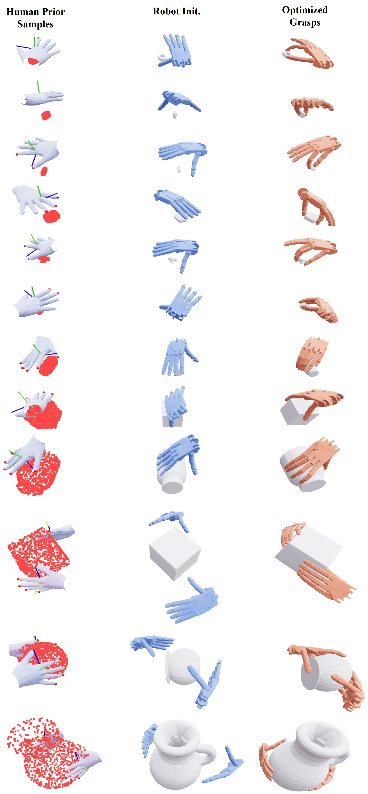

1
Adaptivity
Compared with hand-crafted heuristics, the learned human prior provides object-aware global guidance that constrains optimization to more suitable regions of search space.
Guiding Unified Dexterous Grasp Synthesis Across Modes and Scales via Learned Human Priors
Tsinghua University
* Equal contribution.
Motivation
How can we enable a bimanual robot to adaptively grasp objects from small screws to large boxes like a human?

Abstract
Dexterous grasping across diverse object scales requires contact modes ranging from two-finger pinches to bimanual grasps. Existing dexterous grasp synthesis methods reduce the high-dimensional optimization space with manually designed expected contacts and initialization heuristics, which struggle to balance synthesis success rate and diversity. We present HUGS, a Human-prior-guided framework for Unified dexterous Grasp Synthesis across modes and scales. Instead of directly retargeting human demonstrations, HUGS learns an object-conditioned human prior that captures human grasp preferences and guides downstream force-closure-aware optimization. The prior is trained on a compact self-collected human grasp dataset with 1.8K grasps over 304 objects, providing broad coverage of object scales and contact modes. During synthesis, HUGS adaptively proposes contact modes and wrist initializations, substantially improving the balance between contact-mode coverage and synthesis success rate over heuristic-based methods. With HUGS, we synthesize 3.2M robotic grasps over 157K scenes, spanning object half-diagonal lengths from 2 cm to 30 cm and modes from two-finger to bimanual grasps. Models trained on the synthesized dataset autonomously select appropriate contact modes in the real world, enabling grasping from screws to large boxes.
Learns object-conditioned human priors from a compact, carefully curated distribution of 1.8K self-collected human grasps over 304 objects to guide robot grasp optimization with better initializations and targets.
Unifies dexterous grasp synthesis from two-finger pinches to bimanual grasps, adapting to object geometry while preserving multi-mode grasp diversity.
Synthesizes large-scale multi-fingered dexterous grasps across diverse objects and robotic hands, enabling real-world grasping from screws to large boxes.
Leverages force-closure-aware optimization to promote physically plausible and stable synthesized robotic grasps.
Overview Video
Sound on
Method Overview
In grasp pose optimization, the contact configuration \(c\) determines the number and locations of contact points, making the problem hybrid discrete-continuous. Existing methods typically reduce the combinatorial search space with predefined contact regions. Meanwhile, the wrist pose \(\mathbf{T}\) is highly global, and poor initializations often trap local optimization in suboptimal minima. Consequently, optimization quality largely depends on initializing \(c\) and \(\mathbf{T}\), while optimizing the hand joint configuration \(\mathbf{Q}\) is relatively straightforward given suitable \(c\) and \(\mathbf{T}\). Existing methods mainly use fixed coarse heuristics to initialize contact configurations and wrist poses, wasting optimization budget on implausible grasp modes while missing object-aware strategies. HUGS instead learns an object-conditioned human grasp prior to organize the search space before robot-specific optimization.
We adopt a compact discrete contact-mode representation with four coarse modes, selected as prevalent human grasping strategies that current dexterous robot hands can execute: Single-Two, a single-hand two-finger grasp for small objects with limited contact area; Single-Three, a single-hand three-finger grasp, the minimum for force closure under frictional point contacts; Single-Full, a denser single-hand full-finger grasp requiring larger accessible object surface area; and Both-Full, a full-finger bimanual grasp for large objects requiring broader surface coverage.
Based on this contact-mode abstraction, the learned prior predicts \(\pi(c \mid o)\) and \(\pi(\mathbf{T}_0 \mid c, o)\) to propose plausible contact modes \(c\) and wrist initializations \(\mathbf{T}_0\). Conditioned on these high-level proposals, the robot optimizer solves for \(\mathbf{Q}\) and refines \(\mathbf{T}\) under force-closure and feasibility constraints.

Overview of HUGS. HUGS learns an object-conditioned human prior from demonstrations with geometry, wrist poses, and contact modes. During synthesis, it predicts contact-mode distributions and wrist initializations for unseen objects, transfers them to robot hands, and optimizes force closure under feasibility constraints to synthesize large-scale robot grasps across modes and scales.
This Human Prior + Robot Optimization paradigm offers three advantages:
Compared with hand-crafted heuristics, the learned human prior provides object-aware global guidance that constrains optimization to more suitable regions of search space.
Unlike direct retargeting methods, the learned prior generalizes to unseen objects, enabling scalable synthesis of large and diverse robotic grasp datasets from limited human demonstrations.
Force-aware optimization accounts for robot-specific kinematics and task physics, while tolerating slight errors in coarse human prior.
Synthesized Grasps


We synthesize 3.2M robotic grasps over 157K scenes on one robotic hand, spanning object half-diagonal lengths from 2 cm to 30 cm and contact modes from two-finger pinches to bimanual grasps. The same object can also admit multiple contact modes, reflecting the multi-mode nature of dexterous grasping.
Quantitative Results


We evaluate how human-prior guidance improves synthesis. Panels (a) and (b) above show per-mode budgets (light background bars), success counts (dark foreground bars), and overall success across object scales. The heuristic baselines reveal the limits of scale-only rules. Heur-Fix works only near the scale suited to Single-Full, showing the need for contact-mode adaptation. Heur-Single is more robust, but one scale-dependent mode cannot cover multiple valid strategies within the same scale. Heur-Multi adds mode diversity, yet wastes attempts on object-specific mismatches, such as single-hand attempts on 13-23 cm objects. HUGS instead allocates budget by object geometry, smoothly shifting from Single-Two to Single-Three, Single-Full, and finally Both-Full as scale grows. It also captures object-specific exceptions within the same scale: at 13-19 cm, HUGS makes fewer Single-Full attempts but targets the few objects that admit single-hand grasps more accurately, yielding a much higher success rate than Heur-Multi. Thus, HUGS consistently outperforms all baselines. The teaser figure visualizes diverse synthesized grasps, where many adjacent examples show the same object synthesized with different contact modes. Separately, HUGS-Single outperforms Heur-Single under the same single-mode setting, isolating the benefit of human-prior wrist initialization.
Panel (c) above compares grasp diversity using the explained-variance ratio of the first principal component. HUGS has lower pose dispersion because it concentrates on human-preferred wrist regions. This is expected: heuristic sampling increases diversity partly via unnatural reversed wrist poses, which are difficult for humanoid robots to execute.

We further test whether synthesized grasps can supervise learning-based grasp generation. We train identical lightweight object-conditioned generators on Heur-Multi and HUGS data, both of which contain multiple contact modes for the same object. The generator predicts binary contact-mode availability and corresponding grasp poses. With HUGS data, contact-mode availability is accurately predicted, reaching a best F1 score of 0.934 in Panel (a) above. In simulation, the HUGS-trained generator achieves higher grasp success than the Heur-Multi-trained one, as shown in Panel (b) above, showing that HUGS produces easier-to-learn training data with better tolerance to generated-grasp errors. Success remains above 70% for medium objects (6-13 cm), but drops on very small and large objects, showing that cross-scale, cross-mode grasp generation remains challenging. Since our focus is grasp synthesis, we leave specialized generator design to future work.
Real-World Demonstrations
Objects
Contact Modes
Grasp gallery videos will be added here.
Same Object, Different Contact Modes
Mode diversity matters even for the same object. In clutter, a top-down single-hand grasp can remain feasible while side bimanual grasping is blocked. When the box is loaded, bimanual grasping becomes necessary to provide sufficient grasping force. Diverse generated grasps allow deployment-time constraints to select an appropriate grasp.
More Visualization
304 objects, 1.8K distinct grasps, and a broad range of object scales and contact modes.

The learned human prior predicts object-conditioned probabilities over Single-Two, Single-Three, Single-Full, and Both-Full contact modes, adapting its mode preferences to object geometry and scale.

The wrist-pose prior is conditioned jointly on object geometry and contact mode. For the same object, different modes can favor different approach regions, such as top-down single-hand grasps or side and top bimanual approaches.

Human-prior wrist-pose samples provide coarse object-conditioned guidance, which is transferred to robot wrist initializations and then refined by force-closure-aware optimization into final single-hand and bimanual grasps.
Citation
@article{yu2026hugs,
title={HUGS: Guiding Unified Dexterous Grasp Synthesis Across Modes and Scales via Learned Human Priors},
author={Mingrui Yu and Yongpeng Jiang and Yongyi Jia and Kangchen Lv and Xiangjie Yan and Li Huang and Yi Ren and Xiang Li},
journal={arXiv preprint arXiv:2607.04554},
year={2026},
}